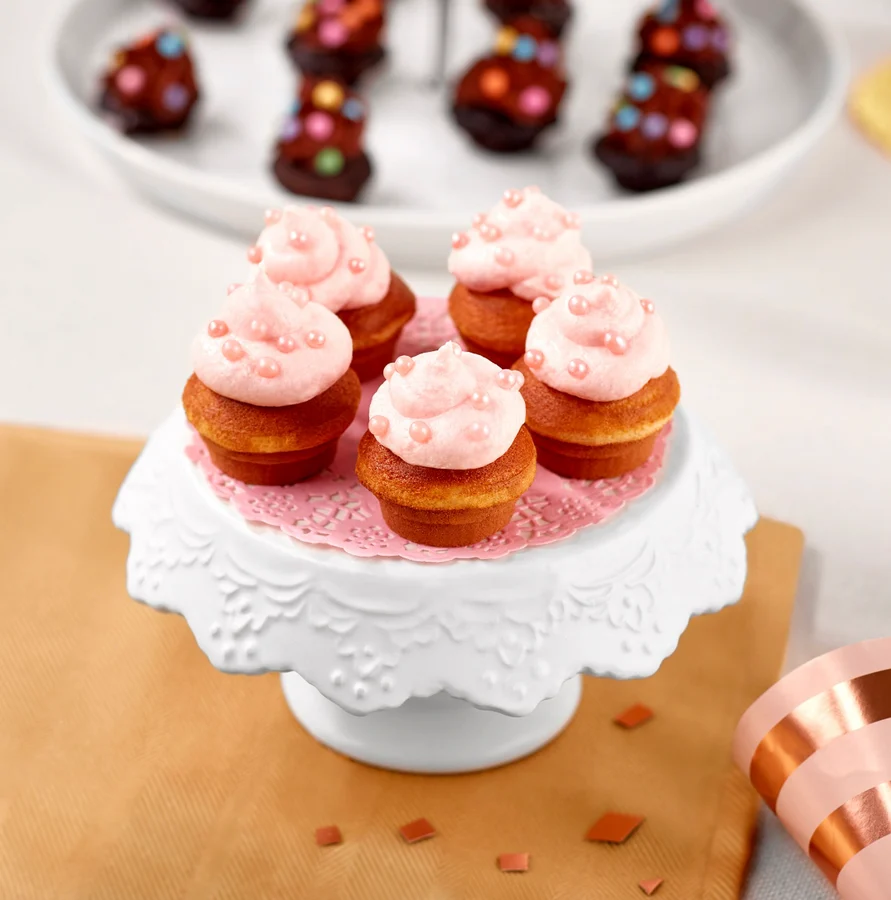
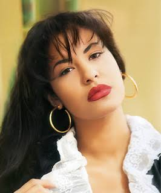
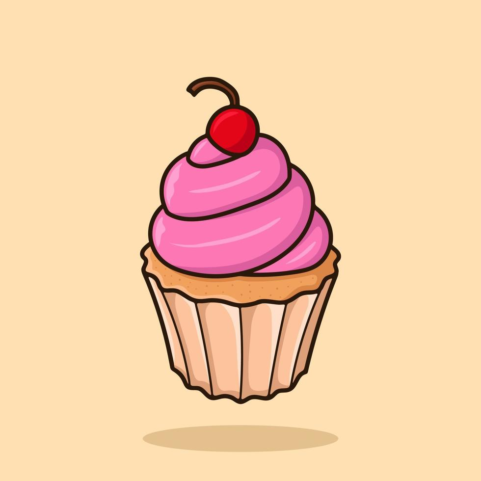

Este postre surge en el siglo XIX en Estados Unidos. Antes de que surgieran los moldes especiales para cupcakes, solían hacerse en tazones, cazuelas de barro o ramequines, siendo este el significado de su nombre en inglés (cup y cake). También existe otro origen para su nombre, derivado de la forma de medir los ingredientes empleados para su elaboración.

La receta base de un cupcake es la misma que la de cualquier otra tarta: mantequilla, azúcar, huevos, levadura y harina. La mayoría de las recetas para tartas pueden servir, y debido a su reducido tamaño se realizan más rápido que una tarta común. Es muy habitual en cumpleaños y celebraciones, dado que es llamativo, permite una infinidad de sabores distintos y suelen gustar a todos. La receta base de un cupcake es la misma que la de cualquier otra tarta: mantequilla, azúcar, huevos, levadura y harina. La mayoría de las recetas para tartas pueden servir, y debido a su reducido tamaño se realizan más rápido que una tarta común. Es muy habitual en cumpleaños y celebraciones, dado que es llamativo, permite una infinidad de sabores distintos y suelen gustar a todos.